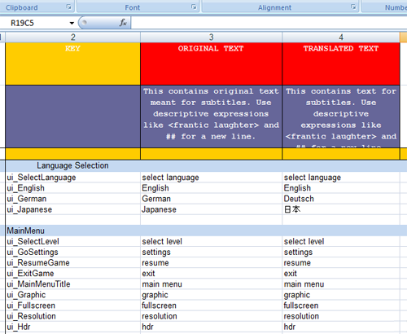
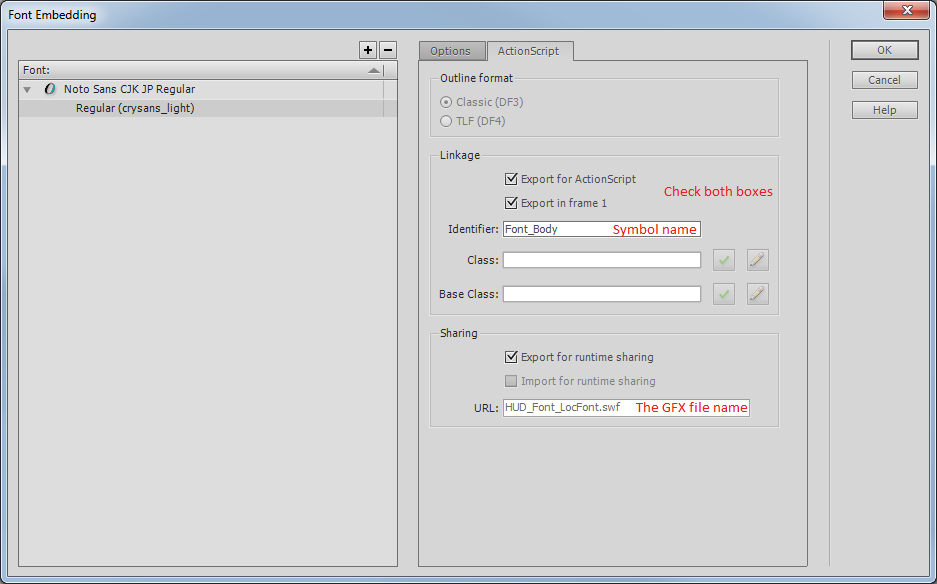
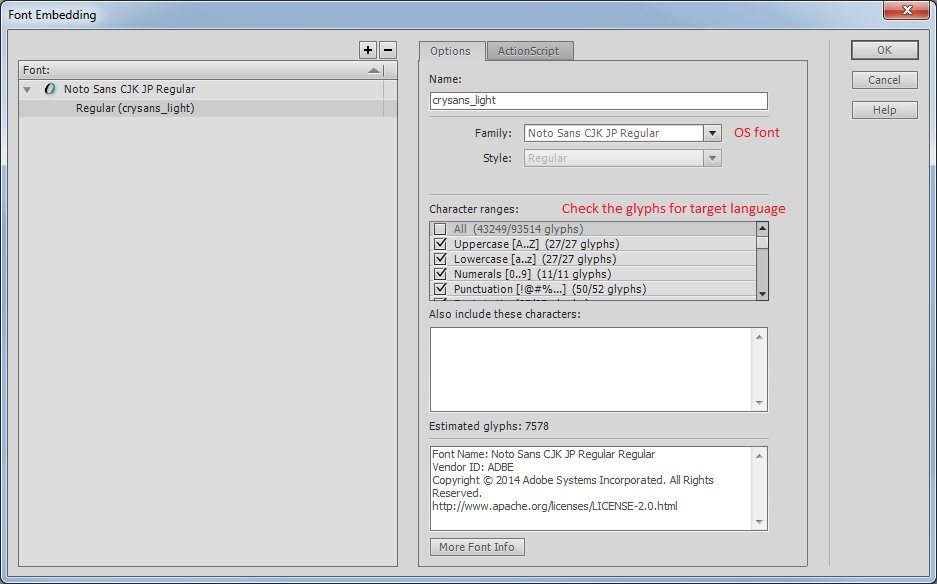
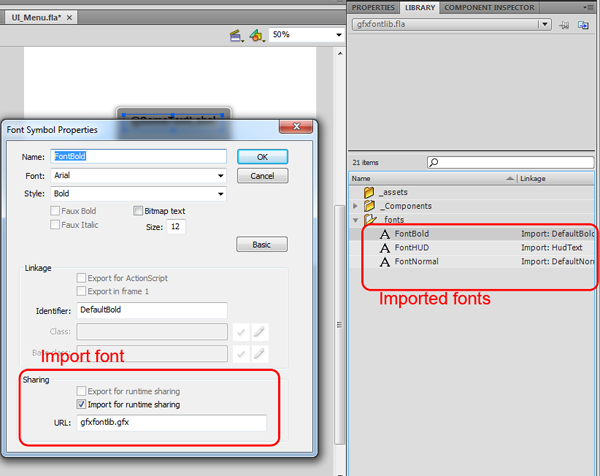
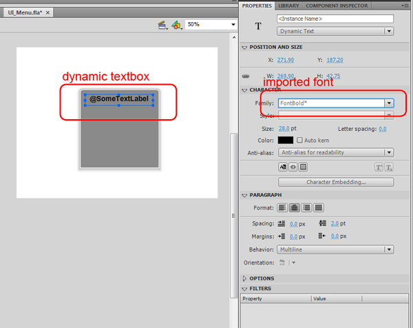

Overview
CRYENGINE comes with a localization system that allows text localization for the UI. The Localization System is documented within the Asset Creation Manual.
Besides string localization it is also possible to use different font and glyph sets for each language.
Basic Folder Structure
Folder | Packaged location | Description |
|---|---|---|
| GameSDK\GameData.pak | Flash assets |
| Localization\<language>_XML.pak | Font lib for each language |
Localization\<language>\text_ui_*.xml | Localization\<language>_XML.pak | Translated strings |
String Localization
UI string translations are stored in .xml Excel sheets. It simply stores labels (keys) and translation.
Translation table
Translation tables for each language must be stored under: Localization\<Language>\text_ui*.xml for it to be processed to the default locations used by the engine.
For UI translation the tables must have a column "KEY", "ORIGINAL TEXT" and "TRANSLATED TEXT".

Pass Localized String at Run-time
A label is also translated if it is passed as string to a dynamic textfield via: Code\FlowGraph\LUA
<UIElement name="MyElement">
<GFx file=" MyElement.gfx" layer="2" alpha="1" >
<Constraints>
<Align mode="fullscreen" />
</Constraints>
</GFx>
<variables>
<variable name=" MyTextbox " varname="_root.TextLayer.TextBox.text"/>
</variables>
</UIElement>
IFlashUIPtr pFlashUI = GetIFlashUIPtr();
if( NULL != pFlashUI )
{
IUIElement* pElement = pFlashUI->GetUIElement("MyElement");
if( NULL != pElement)
{
pUIElement->SetVariable("MyTextbox", SUIArguments("@somelabel"));
}
}
Font libraries and glyph sets
It is recommended to use one font library for all flash assets. One reason is to save memory since you don't want to embed every font in every flash file. This technique also allows embedding different glyph sets for different languages.
It also makes sure that your design is consistent over all UI assets and changes are even easier since it is only necessary to change one file per language to switch the font for the whole UI.
Setup font library
A font library is a GFX file that exports Action Script symbols describing a font, and contains the associated glyph data to render the font in the game.
When dynamic text is composed by the user, the glyphs will be loaded by Scaleform from this source file.
It is possible to set up a font library with more than one font (with different Action Script export names), but in the GameSDK sample we only use one.
In the GameSDK sample project, we use the library HUD_Font_LocFont.gfx file. The flash file used to generate this GFX in the SDK can be downloaded from here as a sample: HUD_Font_LocFont.fla. However, you can create your own if you prefer to create a font library from scratch.
For each distinct font you wish to use, create new font symbols and set the font-style in the library (Right-Click -> New font).
Go to the font's properties to set up the export settings. 
Make sure to check both the export checkboxes, and set the Identifier to an unique name. This is the name will be used in flash files using this font.
The sharing URL should be set to the name of the final GFX file (with .SWF extension)
After you set up all the fonts you wish to use in the UI, you should create localized copies of the font library for each language you wish to support.
The most optimized and efficient way to do this is to select a sub-set of glyphs that can be used in some language, and only export this set of glyphs for that specific language. This saves disk and memory space, as only the necessary glyphs will be available.
In the options dialog for the font, you can set the font groups to embed glyphs for. The glyphs will be processed from the given OS font and styles.

After you finish setting up the fonts in the font library for a language, publish the flash file to .SWF
This should result in HUD_Font_LocFont.swf file for that specific language.
Now, use gfxexport tool to convert the font library to Scaleform GFX format.
gfxexport.exe -c -i DDS -rescale hi HUD_Font_LocFont.swf
Make sure to copy the resulting GFX into your per-language localized asset file (so it eventually ends up in Localization/<language>_xml.pak for that language, for the default asset build script you would store it as Localization/<language/HUD_Font_LocFont.gfx)
These steps should be repeated for each language you want to support in your project that needs distinct glyph sets for it's fonts. Alternatively, you can only create one (large) font library and re-use it for each language.
At runtime you have to reload the UI elements after switching to a different language to make sure the new glyphs take effect.
Import fonts to any flash asset
Finally you need to import the exported fonts from the font library into your flash assets.
You need to set up a font in the flash file's library, and mark it for import as seen here.
Enter the same Identifier for the font you exported in the font library GFX file, and set the import URL to the GFX file.

While authoring the flash file, you can use the imported font symbol in the library instead of referring to an OS font.
At runtime, this font will be loaded from the font library.
Export your flash assets with the following command:
gfxexport.exe -c -i DDS -share_images -rescale hi -strip_font_shapes *.swf
To use the fonts on your textboxes just choose them in the font dropdown list.
Note, the * on the font means that the font resides in the font library.

If you use translation labels for static textboxes you have to make them dynamic! Otherwise the translation doesn't work.